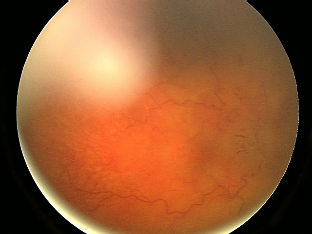

Jaqueline: dois surtos, visão e motor
Jaqueline, 27 anos. Dois momentos no tempo, dois pacotes de achados — e uma papila que não é enfeite. Antes de nomear a doença, listar os dados positivos: tempo, lateralidade, topografia.
Dois surtos no tempo. Há dois meses: paresia em membro superior esquerdo, tremor em mão direita e diminuição da acuidade visual no olho esquerdo. Esse primeiro surto regrediu espontaneamente depois de dois dias.
Há três dias: hemiparesia espástica em hemicorpo direito e diminuição da acuidade visual no olho direito. Os sintomas atuais pioravam durante as aulas de ginástica. Preocupada, procurou atendimento por conta própria.
Dados positivos de cada surto
| Momento | Achados | Curso |
|---|---|---|
| Há 2 meses | Paresia MSE + tremor MD + ↓acuidade VE | Regrediu em 2 dias |
| Há 3 dias | Hemiparesia espástica hemicorpo D + ↓acuidade VD (piora com esforço) | Em curso |
| Exame | Alteração sensitiva em todo o hemicorpo direito + papila óptica direita alterada | Agora |
Exame: sensitivo + papila
No exame: alteração de sensibilidade em todo o hemicorpo direito. Fundo de olho: alteração da papila óptica direita. O olho não é “enfeite” do caso — é achado objetivo no surto atual.
Método: listar antes de nomear
Ir devagar. Listar os dados positivos antes de cravar o nome da doença. A pergunta de porta fica: qual o provável diagnóstico?
Levantamentos topográficos (ainda sem etiologia)
Tremor na mão direita → hipótese de comprometimento cerebelar. ↓ Acuidade visual → lesão de nervo óptico / via óptica. Alteração sensitiva em todo o lado direito + hemiparesia espástica no mesmo lado → compõem o surto atual em bloco.
Por que importa na prática: sem organizar o tempo (dois momentos) e as topografias (motor, visão, sensitivo, cerebelo), o diagnóstico some no meio da história.
Resumo operacional
Mulher jovem, dois surtos (visão + motor/sensitivo/cerebelo), papila alterada, piora com esforço — porta para doença desmielinizante central.

Bansal S, Dabbs T, Long V. Pseudo-Foster Kennedy Syndrome, J Med Case Reports 2008 · CC BY 2.0 · fonte

Papila D alterada
O fundo de olho fecha o “olho” como dado objetivo do surto atual: lesão de nervo óptico, topografia craniana, mulher jovem — o trio que abre a porta da desmielinização central.
O próximo passo é topografar a fraqueza espástica e juntar os sítios no SNC.
Quiz
Q1. No primeiro surto de Jaqueline (há 2 meses), o conjunto correto de achados é:
Gabarito: B. O primeiro surto é MSE + tremor MD + VE, e regrediu — o surto atual é outro tempo e outro conjunto.
(A) descreve o surto atual (e exame), não o de 2 meses. (C) não está no caso e não é o padrão. (D) autonômico não é o núcleo do primeiro surto.
Por que se cai na A: misturar os dois tempos num único “pacote” — erro clássico de história.
Q2. A piora durante a ginástica, no contexto deste caso, deve ser lida primeiro como:
Gabarito: B. O caso registra piora com ginástica; o mecanismo (Uhthoff) se formaliza adiante — não se descarta o SNC por esforço.
(A) espástica + papila + visão não são miopatia. (C) conversivo exige RM sem lesão; ainda não se fecha. (D) o oposto do raciocínio.
Por que se cai na C: “piora em contexto de vida” vira atalho para funcional sem imagem.